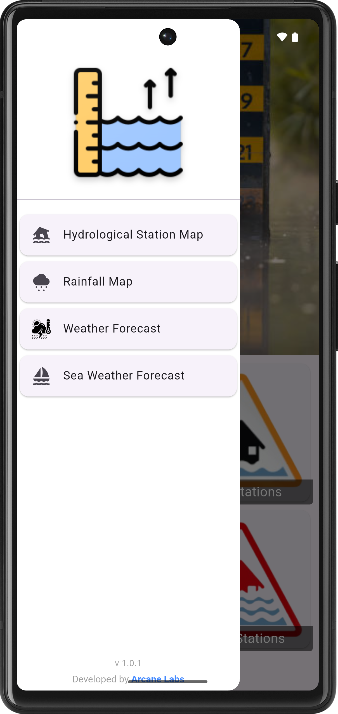
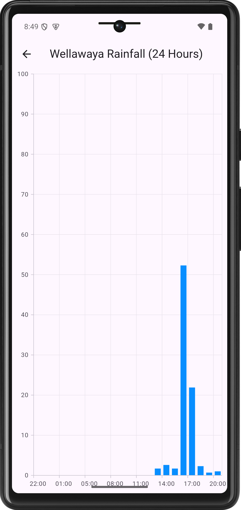

📌 App Description
Flood Alert Sri Lanka is a simple and user-friendly application that shows the water level of major rivers in Sri Lanka. You can check daily flood updates, major warning points, and interactive charts to track water level changes. The app also provides daily weather forecasts and sea weather updates to help you plan safely.
📱 App Screenshots





🎯 App Usability
- ✔ Clean and simple interface for all age groups
- ✔ Real-time river level updates
- ✔ Quick access to flood risk points
- ✔ Charts for daily water level trends
- ✔ Daily weather and sea condition forecasts
- ✔ Lightweight and fast-loading app